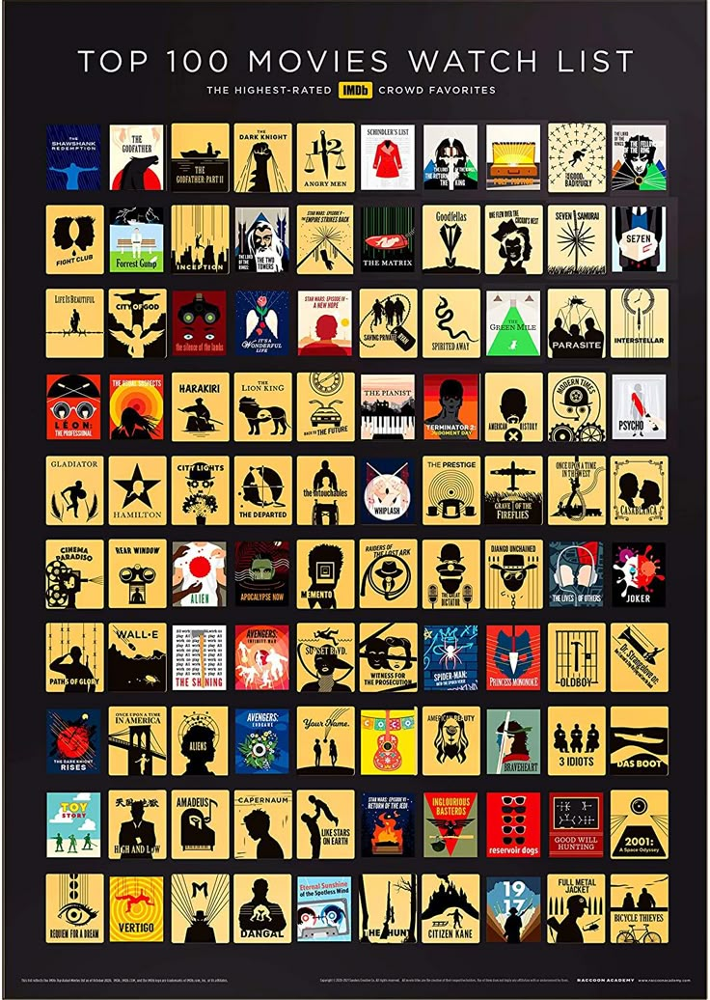

How I Met Your Mother
Ritmi, karakterler arası enerji ve tekrar izlenebilir yapısı nedeniyle favori sitcomlarımdan biri.
API Entegrasyonu
Bu bölümde ücretsiz TVMaze API kullanılarak dizi verileri çekiliyor. Film ve dizi ilgimi tek bir çatı altında göstermek için, API tarafında dizi keşfi; statik bölümde ise favori yapımlarım birlikte sunuluyor.

Favoriler
Ritmi, karakterler arası enerji ve tekrar izlenebilir yapısı nedeniyle favori sitcomlarımdan biri.
Teknoloji ile insan davranışını çarpıcı biçimde bir araya getirmesi ilgimi çekiyor.
Az mekanda güçlü karakter çözümlemeleri kurabilen kült bir film olduğu için listemde.
Teknoloji, tempo ve karakter dönüşümü birleşince tekrar dönüp bakmak istediğim filmlerden biri oluyor.
TVMaze API
Butonlardan birine tıklayabilir ya da kendi aramanı yapabilirsin. Sonuçlar doğrudan ücretsiz TVMaze API üzerinden gelir.